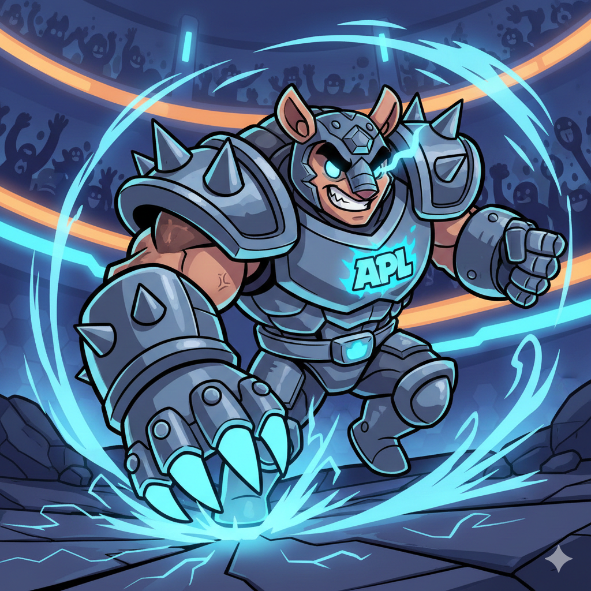

Stop your agents
before they stop you.
APL is a portable, composable, fail-closed policy layer for AI agents. Runtime-agnostic guardrails that go beyond allow / deny — modify, escalate, observe. Like MCP, but for constraints instead of capabilities.

Your agent is one prompt away
from disaster
A system prompt that says "never reveal PII" is a suggestion, not a guarantee. The traits that make agents useful make them hard to constrain.
It leaks a customer's SSN
Sensitive data slips into a response with no redaction, no filter, no second look.
It burns the token budget
One runaway conversation drains a monthly budget in minutes — silently.
It deletes production data
A destructive tool call runs with no confirmation and no human in the loop.
It's hit with prompt injection
An untrusted input rewrites the agent's instructions and walks past the system prompt.
One event in.
One composed verdict out.
An event fires in your agent. APL builds a PolicyEvent, fans it out to every connected policy server, composes the verdicts into one decision, and enforces it. If a server can't be reached, it fails closed.
· unanimous · weighted
A protocol for agent constraints
Where MCP gives a model capabilities through a uniform protocol, APL applies constraints through one.
Runtime-agnostic
One policy, any agent stack — raw OpenAI or Anthropic calls, a LangGraph graph, or something bespoke.
Rich verdicts
Not just allow / deny. Modify a payload, escalate to a human, or observe for audit — five verdicts, one vocabulary.
Fail-closed by default
A guard you can't consult is a guard that says no. Timeouts, errors, and unreachable servers deny — never silently skip.
Declarative or code
Author policies in Python, or in YAML with no Python at all. Serve a .yaml exactly like a .py.
One-line auto-instrument
Patch OpenAI, Anthropic, LiteLLM, LangChain & watsonx in place. Every call flows through your policies.
Composable
Run many policy servers at once. Verdicts merge with defined semantics — deny-overrides, unanimous, weighted & more.
Author a verdict.
Then enforce it live.
Write a policy, see it in isolation with one CLI call, then put it in front of your LLM with a single line. That's the whole loop.
import re from apl import PolicyServer, Verdict server = PolicyServer("guard") @server.policy(name="redact-ssn", events=["output.pre_send"]) async def redact_ssn(event): text = event.payload.output_text or "" if re.search(r"\d{3}-\d{2}-\d{4}", text): return Verdict.modify( target="output", operation="replace", value=re.sub(r"\d{3}-\d{2}-\d{4}", "[SSN REDACTED]", text), reasoning="Redacted SSN", ) return Verdict.allow() if __name__ == "__main__": server.run() # stdio by default
# Try it — no agent required $ apl test ./guard.py -e output.pre_send \ -p '{"output_text": "Your SSN is 123-45-6789"}' MODIFY · output → "Your SSN is [SSN REDACTED]" · Redacted SSN
import apl apl.auto_instrument(policy_servers=["stdio://./guard.py"]) # Use your LLM SDK exactly as normal — # output.pre_send now runs on every reply from openai import OpenAI resp = OpenAI().chat.completions.create( model="gpt-4o", messages=[...], ) print(resp.choices[0].message.content) # → already redacted if a policy fired
# Same idea, no Python required name: corporate-compliance version: 1.0.0 policies: - name: confirm-eu-export events: [tool.pre_invoke] rules: - when: payload.tool_name: { matches: ".*export.*" } metadata.user_region: { in: [EU, EEA, UK] } then: decision: escalate escalation: type: human_confirm prompt: "🇪🇺 GDPR: confirm data export?"
Five verdicts for real-world control
Policies don't just allow or deny — they guide, transform, and escalate.
A guard you can't consult
is a guard that says no.
- ✕Unavailable → deny. A policy that times out, errors, returns a non-verdict, or whose server is unreachable resolves to deny. Enforcement is never silently skipped.
- !Fail-open is explicit and loud. FailMode.OPEN must be passed deliberately — and warns at startup.
- ⏲The layer timeout fails closed too. A bounded evaluation returns deny on expiry.
Many policies. One decision.
When several policies weigh in on one event, a composition strategy reduces their verdicts to a single enforceable decision.
Works with your stack
Create, test & serve
from your terminal
What are AI agent guardrails?
allow, deny, modify, escalate, observe — to enforce them at runtime, independent of the framework the agent is built on.How is APL different from existing guardrail solutions?
allow, deny, modify, escalate, observe — compose many policy servers into one decision, and fail closed by default. Change model providers and your guardrails come with you.Can my security and AI engineering teams work independently?
stdio, or shared org-wide over HTTP) and update them without ever touching the agent. Your AI engineering team builds the agent and connects to the policy layer with one line of auto-instrumentation — they don't write, own, or redeploy policies. And because policies are hot-swappable, security can tighten a rule in production with no agent redeploy. It mirrors MCP's split: capabilities on one side, constraints on the other, each owned by the team responsible for it.How is APL different from a system prompt?
What does "fail-closed" mean?
FailMode.OPEN) is an explicit, logged opt-in.Which frameworks and LLM providers does APL support?
Is APL open source and free?
agent-policy-layer. It's pure Python with no external services required.How is APL like MCP?
Secure your agents.
Sleep better at night.
Start protecting your AI agents in under two minutes. No Docker, no external services — just pip install.